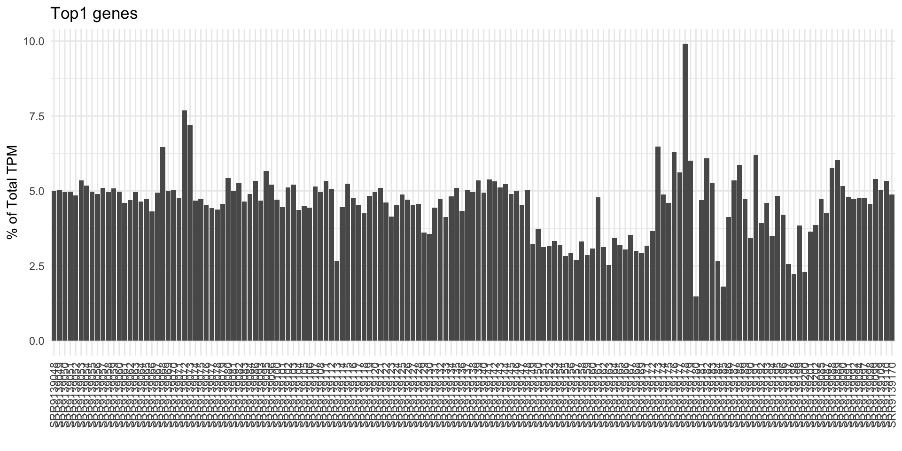
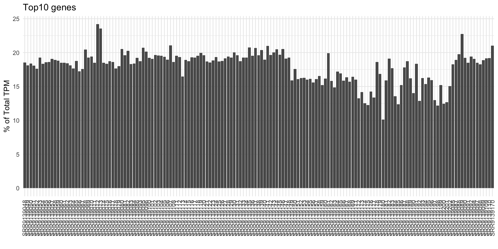
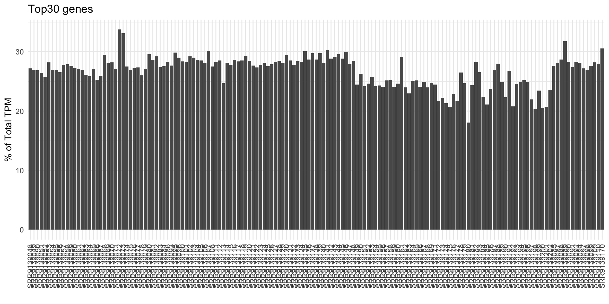
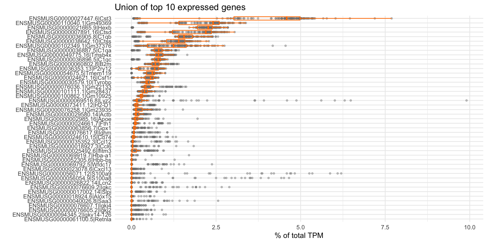
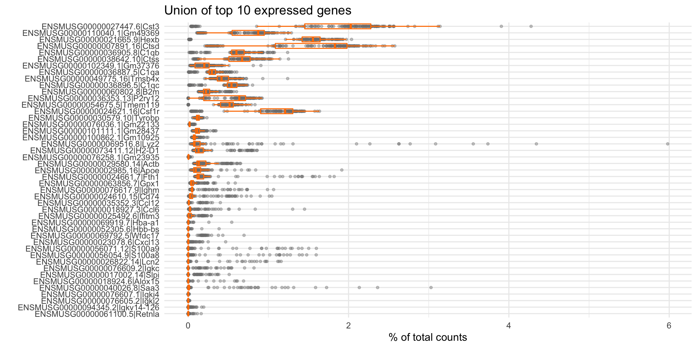

Chapter 1 QC plots
Quality control (QC) is critical to examine the basic QC metrics of the data. In this section, we present several QC plots to visualize the quality of each dataset within the project.
The first set of QC plots show the Top Gene Ratios. There are always top genes in the samples, and we are usually interested in knowing what are they, and how do they drive the overall expression profiles. Thus, these three top gene ratio plots are useful to determine what the percentage of the Top 1, 10 and 30 genes in the overall TPM. Since the sum of TPM values will always be 1 million, the percentage of TPM value indicates how these genes influence the RNA content detected in the samples.
To better narrow down the top genes, the second set of QC plots shows the list of Top Genes and their expression ranges, for TPM and counts (if the counts information is available). Since there may be multiple samples across the whole project, here, we present the union of top 10 genes, to make sure at least 10 genes will be plotted. The user can easily pinpoint what are those highly expressed genes, and learn how they express across all samples. It would be beneficial to notice that certain tissues should have a signature of highly expressed genes, and these plots may serve as a quality checking step of the current dataset.
1.1 Top gene ratio
The following three plots present the Top N (1, 10, 30) gene ratios using the percentage (%) of TPM.
1.1.1 Top1 % of Total TPM

1.1.2 Top10 % of Total TPM

1.1.3 Top30 % of Total TPM

1.2 Top expressed genes
The following plots present the union of top 10 expressed genes across samples in the project. We used 10 genes by default because if the project contains a couple of samples, the union of top genes may result in a long list. Here, we ensure at least 10 genes to plot, but won’t be too many even if this project is large.
1.2.1 Top genes by TPM

1.2.2 Top genes by counts
